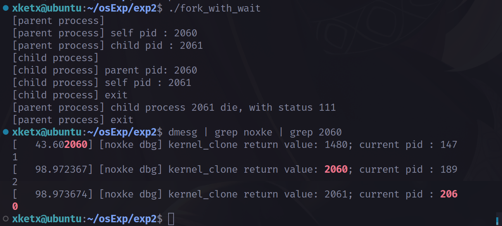

进程创建 fork fork实际调用clone实现
1 2 3 4 5 6 7 8 struct kernel_clone_args args =return kernel_clone(&args);
kernel_clone 进程创建主要操作在kernel_clone函数中
1 2 3 4 5 6 7 8 9 10 pid_t kernel_clone (struct kernel_clone_args *args) ;
参数结构体kernel_clone_args定义如下
1 2 3 4 5 6 7 8 9 10 11 12 13 14 15 16 17 18 19 20 21 22 23 24 25 struct kernel_clone_args {int __user *pidfd;int __user *child_tid;int __user *parent_tid;const char *name;int exit_signal;1 ;1 ;1 ;1 ;unsigned long stack ;unsigned long stack_size;unsigned long tls;pid_t *set_tid;size_t set_tid_size;int cgroup;int idle;int (*fn)(void *);void *fn_arg;struct cgroup *cgrp ;struct css_set *cset ;
kernel_clone复制当前进程，当前进程currenttrace新创建的进程，获取新创建的进程的pid，启动新创建的进程，返回pid
1 2 3 4 5 6 7 8 9 10 11 12 p = copy_process(NULL , trace, NUMA_NO_NODE, args);return nr;
在kernel_clonereturn之前添加调试代码
1 2 3 4 5 6 7 put_pid(pid);if (nr > 1000 ) pid_t current_nr = *(¤t->pid);"[noxke dbg] kernel_clone return value: %d; current pid : %d\n" , nr, current_nr);return nr;

调试可以发现，主进程2060创建了子进程2061，kernel_clone函数返回值为fork得到的子进程的pid